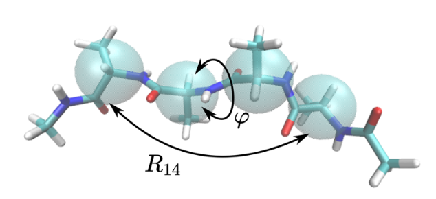

Non-equilibrium reweighting
Equilibrium reweighting from information theory
Consider a coordinate \(x\) with unknown probability distribution, \(p(x)\). We further define \(q(x)\) as a prior distribution on \(p(x)\). The most likely representation of \(p(x)\) can be found by minimizing the cross-entropy functional \[ \mathcal{C}[p(x)] = - \int {\rm d}x \, p(x) \ln \frac{p(x)}{q(x)}. \tag{1} \] Without further constraints, this will naturally lead to \(p(x) = q(x)\).
Now let’s add some constraints.
First we will enforce all probabilities to be normalized \[ \int {\rm d}x \, p(x) = 1. \]
Working in the canonical ensemble, we add a constraint on the average energy, \(\langle E \rangle\). The resulting cross-entropy functional yields \[ \mathcal{C}_{\rm equ}[p(x)] = - \int {\rm d}x \, p(x) \ln \frac{p(x)}{q(x)} - \zeta \left( \int {\rm d}x \, p(x) - 1 \right) - \beta \left( \int {\rm d}x \, p(x)E(x) -\langle E \rangle \right). \tag{2} \] Minimization of \(\mathcal{C}_{\rm equ}\) leads to the Boltzmann expression \[ p(x) = \frac{q(x)}{Z(\beta)}\exp[-\beta E(x)], \] where the partition function \(Z(\beta) = \int {\rm d}x q(x) \exp[-\beta E(x)]\) normalizes \(p(x)\) and the Lagrange multiplier is naturally identified with the inverse temperature, \(\beta^{-1} = k_{\rm B}T\).
The expression lends itself to equilibrium reweighting: sampling of \(q(x)\) at inverse temperature \(\beta'\) to reweight at another, \(\beta''\). Caveat: this only works if we have a good knowledge/sampling of the density of states, \(\Omega(x) = q(x) \exp[\beta' E(x)]\)). Interestingly this basically recovers the celebrated Ferrenberg and Swendsen histogram reweighting formula, but from a Bayesian perspective!
Reweighting of nonequilibrium steady-state dynamics
This formalism can be extended to nonequilibrium steady-state (NESS) dynamics. Moving from equilibrium thermodynamics to dynamics leads to the consideration of microtrajectories. Compared to microstates, their number quickly becomes intractable for all but the simplest of systems. For simplicity, we assume Markovian dynamics, so that we chop microtrajectories into bits that we can combine together. Effectively it converts an integral over a space-time trajectory into a sum \[ \int {\rm d}t \, x(t) \rightarrow \sum_i x_i. \]
The discretized version of the cross-entropy functional becomes \[ \mathcal{C} = - \sum_{i,j} \pi_i p_{ij} \ln \frac{p_{ij}}{q_{ij}}, \] which looks pretty familiar to the continuous case (1), but now uses the stationary distribution, \(\pi\), and transition probability matrix elements, \(p_{ij}\), over a pre-defined lagtime.
Let’s add some constraints!
Ok, so there are different types of constraints we could include, but here we’ll only deal with microscopic ones. If we were in equilibrium, we’d be working with detailed balance, \(\pi_i p_{ij} = \pi_j p_{ji}\). Detailed balance ensures there’s no net local flux. Out of equilbrium, we can still expect a balance constraint, but a weaker one–the famous Crooks fluctuation theorem.
Crooks fluctuation theorem
The Crooks fluctuation theorem weighs the probability of observing a trajectory under an external driving force against its time-reversed analog. Let’s denote the probability of observing the time-forward trajectory by \(\mathcal{P}[\Gamma(+t)|f(+t)]\) and its time-reversed counterpart by \(\mathcal{P}[\Gamma(-t)|f(-t)]\). Crooks then tells us that \[ \frac{\mathcal{P}[\Gamma(+t)|f(+t)]}{\mathcal{P}[\Gamma(-t)|f(-t)]} = \exp(-\beta Q[\Gamma(+t)|f(+t)]), \] where \(Q[\Gamma(+t)|f(+t)]\) refers to the amount of heat exchanged between the system and the reservoir. This equation can be integrated to yield the more familiar expression \[ \langle \Delta S_{ij}\rangle = \ln \frac{p_{ij}}{p_{ji}}, \tag{3} \] where \(\Delta S_{ij}\), the local entropy production, describes the amount of work an external reservoir has to perform on the system to transition between the two states \(i\) and \(j\). This expression generalizes detailed balance.
The expression for the local entropy production can be inserted as a constraint on the transition probability matrix elements to the cross-entropy functional (Eq. 2). We proposed such a functional in [Bause et al.][1], using such an approach for local balance, as well as a looser global balance constraint.
The resulting equation can be solved analytically, and its coefficients determined numerically by self-iteration.
Seifert expression for the local entropy production
One exciting aspect of Eq. (3) is the possibility to determine \(\Delta S_{ij}\). Thanks to Udo Seifert, we can determine the local entropy production of a microscopic trajectory, \(\Gamma(t)\), itself \[ \Delta S[\Gamma(t)] = \int {\rm d}t \, \frac{\bf{F}\cdot \bf{\dot\Gamma}}{T}, \tag{4} \] where we integrate over time, \(\bf{\dot\Gamma}\) is the velocity, and \(T\) is the temperature.
Marius Bause (first author in the paper) shows that the cross-entropy (aka Maximum Caliber) functional yields quantitative reweighting for overdamped Brownian dynamics. Here’s a comparison of reweighting in and out of equilibrium against direct simulations (take away: the points are on the top of the curves!):

His work leads to the formulation of an invariant. Just like the density of states, which does not change under change in temperature, this invariant does not depend on the driving force. It does, however, depend on the control variable (temperature of \(\Delta S\)).
Collective variables
Marius’ follow-up work demonstrates the applicability of the method to larger systems by working with collective variables. The trick consists of replacing the potential energy that is hidden in Eq. (4) by a potential of mean force. In analogy, think of how structure-based coarse-graining goes from an atomistic potential energy surface to a smaller potential of mean force. The derivation of local entropy production in collective coordinates can be found in [Bause & Bereau][2]. It allowed Marius to perform quantitative non-equilibrium reweighting for a small peptide.
